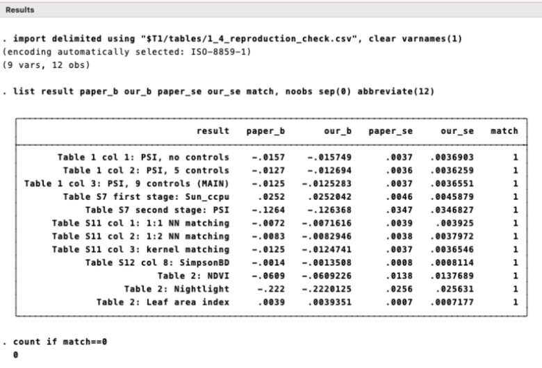
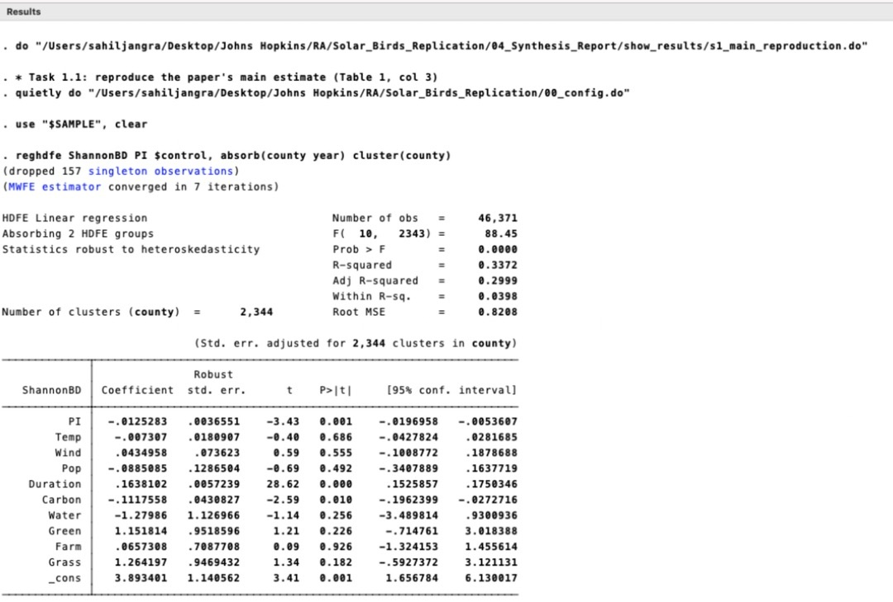

Every claim, tied to its page
Click a blue chip anywhere on this site. A panel opens with the exact location, what the paper reports there, what we find, and the Stata output behind it.
Paper claims, checked
| The paper says | Where | What we find |
|---|---|---|
| One more PSI point lowers Shannon by 0.0125 (N = 46,371) | Table 1, p. 832 | Reproduces exactly. Falls to −0.0027 (p = 0.47) in fair comparisons. → |
| Bird data come from a citizen-science platform, China Birdreport | SM p. 2 | Records are opportunistic and their volume is related to PSI. → |
| Observer effort is handled by the control Duration | Table S1, SM p. 24 | “Number of birdwatchers” is a count of records, not people. Effort is never an outcome. → |
| Results hold after dropping the bottom 20/10/5/3% of county-months by record count | Table S14, SM p. 44 | The table keeps 7,954 to 26,918 rows: 17–58% of the sample, not 80–97%. |
| PSI correlates positively with solar-plant area (r = 0.041) | SM p. 12 | That is across counties. Within a county over time the relation is negative. → |
| Instrument: ln(sunshine, 1984–2013) ÷ city climate-policy uncertainty | SM p. 8 | The data label says 1994–2023. The instrument also has a direct effect. → |
| IV estimate −0.1264 | Table S7, SM p. 33 | Reproduces. Becomes −0.042, not significant, once the direct effect is allowed. → |
| Instrument validity tests | Table S10, SM p. 38 | The reported F of about 8 is the joint F of all regressors. The instrument's own F there is 49. |
| Propensity-score matching confirms the result | Table S11, SM p. 40 | The matching weights are not applied. With them: −0.005, not significant. |
| Solar-plant area also lowers Shannon | Table S12, SM p. 41 | −0.0387 reproduces. It vanishes holding birdwatcher records fixed. → |
| Data sources, including plant capacity | Table S2, SM p. 26 | Area is missing for 1,184 counties and set to 0; only 473 of them also lack PSI. |
Page numbers were checked against the published PDFs: journal pages for the article, PDF pages for the Supplementary Materials. The paper has no line numbers, so page plus table or paragraph is the most precise location available.
Reproduction check: 12 of 12 numbers match
The authors' code, run with only file paths changed, against the published values.


The reproducibility checklist is blank
The paper's supplementary files include an MDAR reproducibility checklist. Authors use this form to say where the manuscript reports exclusions, statistical tests, and data and code availability.
| Checklist item | Authors' entry in the posted file | Why it matters here |
|---|---|---|
| Attrition: were data points omitted, and why? | Empty | PSI is set to 0 for 724 counties; 2,372 rows are dropped for a missing control; Table S14 keeps 17–58% of the sample. |
| Inclusion and exclusion criteria | Empty | The low-activity exclusions do not match their description. |
| Statistics: tests used and why | Empty | |
| Data availability | Empty | The data are public on the authors' GitHub, so the paper itself covers this. |
| Code availability | Empty | The code is public too. |
All five pages have no entries (MDAR checklist, p. 4). We can speak only to the file as posted: a completed form may exist that was not posted.
Where things are in the paper
| Item | Location | Open |
|---|---|---|
| Main result (Table 1) | Article, p. 832 | Table 1 |
| PSI–Area link and the instrument, in the text | Article, p. 833 | p. 833 |
| Bird data source | SM p. 2 | SM p. 2 |
| Identification strategy and instrument | SM pp. 8–9 | SM p. 8 |
| Area as treatment; PSI–Area correlation | SM pp. 12–13 | SM p. 12 |
| Low-effort exclusions, in the text | SM p. 15 | SM p. 15 / Table S14 |
| Fig. S2: PSI against solar area | SM p. 21 | Fig. S2 |
| Table S1: variable definitions | SM p. 24 | Table S1 |
| Table S2: data sources | SM p. 26 | Table S2 |
| Table S4: summary statistics | SM p. 29 | Table S4 |
| Table S7: IV estimates | SM p. 33 | Table S7 |
| Table S10: instrument tests | SM p. 38 | Table S10 |
| Table S11: matching | SM p. 40 | Table S11 |
| Table S12: alternative measures, including Area | SM p. 41 | Table S12 |
| Table S14: low-effort exclusions | SM p. 44 | Table S14 |
| Reproducibility checklist (MDAR) | Separate file, 5 pages | Checklist |
Every table the authors' code produces is also in the Library, as reproduced by our Stata run.